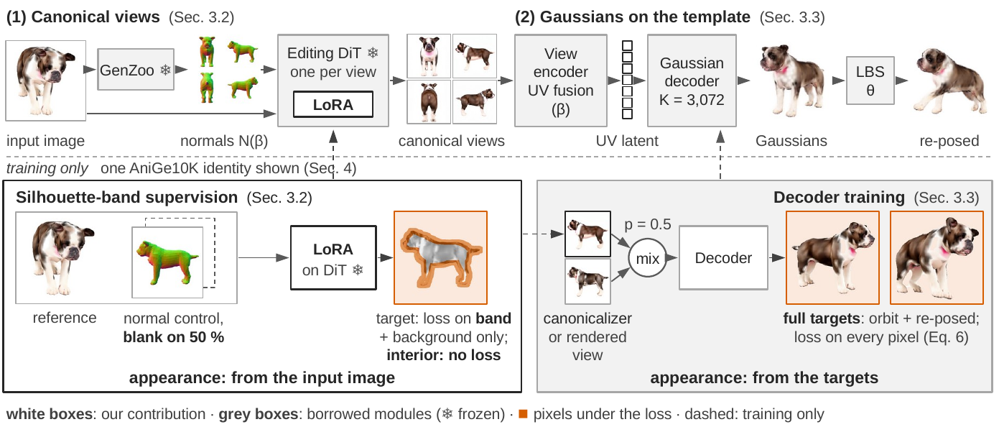
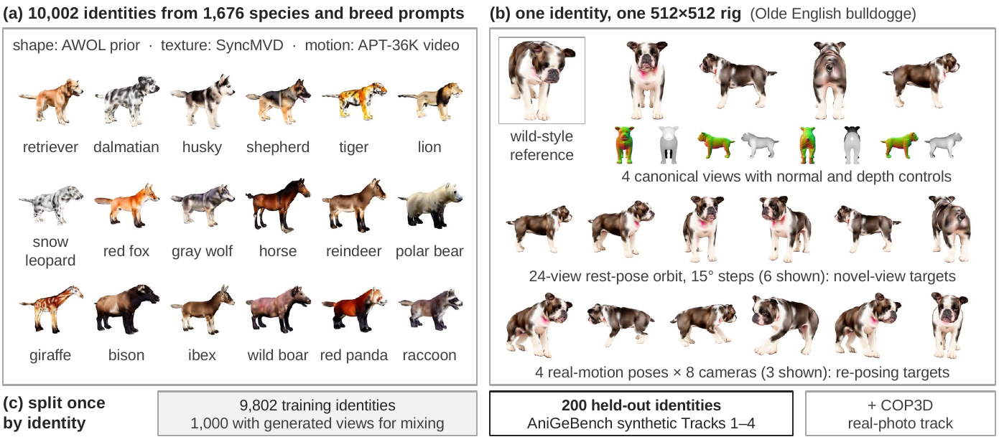
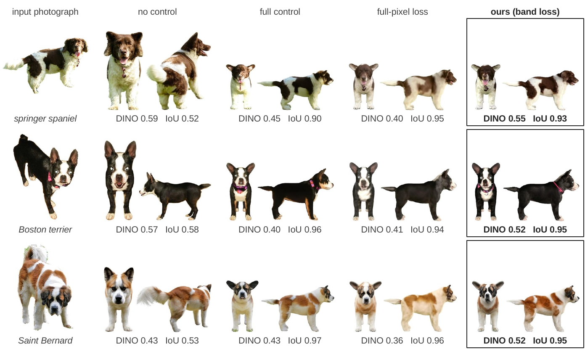
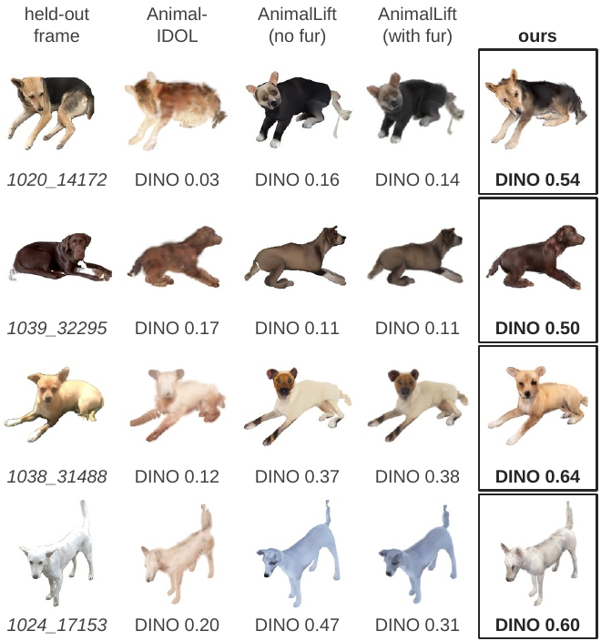
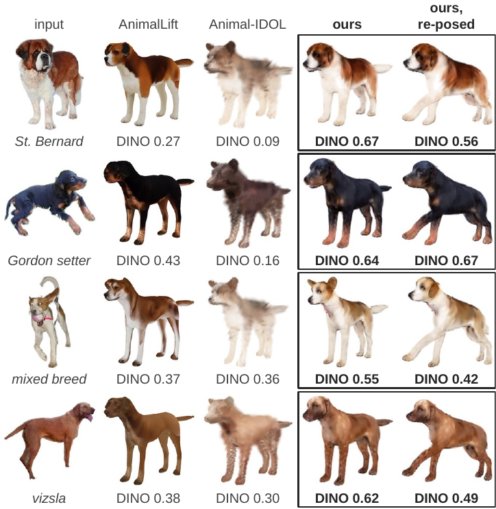

We reconstruct an animatable 3D animal from a single photograph. A natural route generates canonical views of the animal that follow a parametric template and reconstructs a template-anchored avatar from them. The standard way to make the views follow the template is a pixel-aligned control learned from synthetic renders. We find that this control repaints real animals: its adapter learns the appearance of the synthetic targets along with their geometry, and a synthetic benchmark cannot detect the loss. Our key idea is to take the geometry from the template and the appearance from the photograph. To this end, we present AniGauss++, which supervises the view generator only on the background and a band around the template silhouette, so that the frozen image editor fills the body from the photograph. It then decodes the four canonical views into template-anchored 3D Gaussians that linear blend skinning re-poses. On held-out photographs, this supervision keeps more of the photographed animal than both a full-pixel loss and the standard control adapter. Across training seeds, it also follows the template more reliably than a full-pixel loss. The full pipeline keeps the most identity among animatable methods on real videos. We also release AniGe10K, ten thousand textured SMAL+ identities, and AniGeBench, which scores re-posing against the same animal and measures identity on real photographs.



Without a control the body leaves the template; the full control and the full-pixel loss follow the template but repaint the coat. Our silhouette-band supervision keeps both.

Re-posed to held-out frames of the same dog (COP3D); numbers give DINOv2 identity to the frame.

Novel views and re-posed renders from single wild photographs, compared with animatable baselines.
Fifteen non-canine avatars re-posed with real animal motion, including failure cases.
@article{cho2026anigaussplus,
title = {AniGauss++: Identity-Preserving Animatable Animals from a Single Image},
author = {Cho, Gyeongsu and Kang, Changwoo and Soon, Donghyeon and Hu, Hezhen and Joo, Kyungdon},
journal = {International Journal of Computer Vision (submitted)},
year = {2026}
}